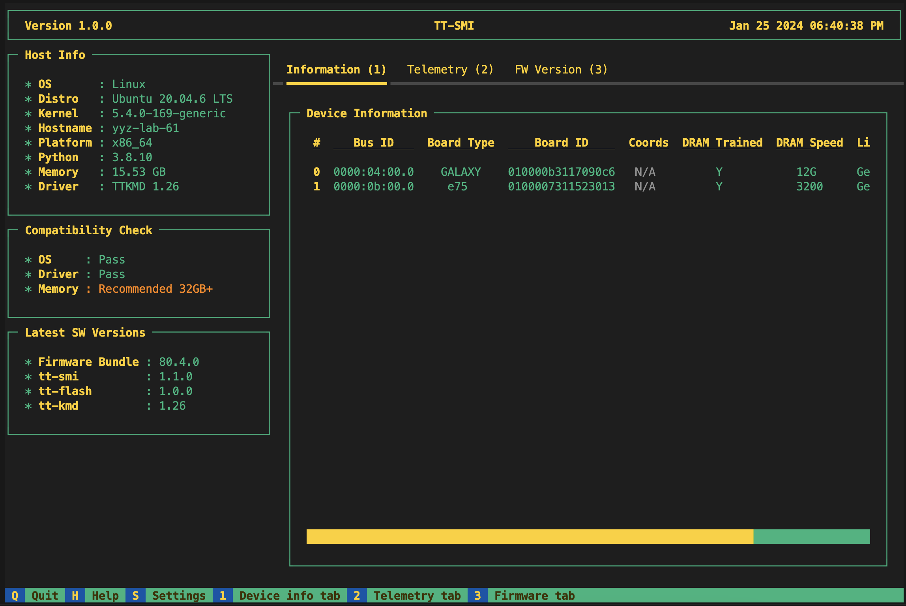

Starting Guide
Welcome to Tenstorrent! This guide will walk you through setting up your Tensix Processor(s), installing necessary software, and running your first “Hello World” program.
Table of Contents
1. Prerequisites
Before you begin, ensure you have the following:
A compatible host machine with minimum hardware and OS requirements as specified by each product’s minimum system requirements:
Network access to download software packages.
Administrator privileges on the host machine.
NOTE: The recommended OS for all Tenstorrent software is Ubuntu 20.04 LTS (Focal Fossa). Each SDK may support newer distributions of Ubuntu; however, compatibility should be considered experimental at this time.
2. Unboxing and Hardware Setup
Unpack the hardware and check all components against the provided list.
Install the hardware following the hardware installation manual and safety guidelines by product:
Secure the hardware in place, ensuring it is firmly seated and all connections are stable.
3. Software Installation
To interact with the Tensix Processor(s), you’ll need to install the system-level dependencies and SDK on your host machine.
Each software package is organized into separate repositories hosted publicly on GitHub.
Important!
This Starting Guide will reference each software utility where the latest version is available. However, each SDK will have it’s own compatibility matrix associated with each release. It is strongly recommended to consult each SDK’s release compatibility matrix to ensure you are installing the correct versions of the system software packages.
Step 1: Install the Driver (TT-KMD)
Navigate to the TT-KMD homepage and follow instructions within the README.
Step 2: Device Firmware Update (TT-Flash / TT-Firmware)
The TT-Firmware file needs to be installed using the TT-Flash utility. For more details, visit the TT-Flash homepage and follow instructions within the README.
Step 3: Setup HugePages
# Ensure packages installed
sudo apt update
sudo apt install -y wget git
# Clone System Tools Repo
git clone https://github.com/tenstorrent/tt-system-tools.git
cd tt-system-tools
chmod +x hugepages-setup.sh
sudo ./hugepages-setup.sh
# Install `.deb`
wget https://github.com/tenstorrent/tt-system-tools/releases/download/upstream%2F1.1/tenstorrent-tools_1.1-5_all.deb
sudo dpkg -i tenstorrent-tools_1.1-5_all.deb
# Start Services
sudo systemctl enable --now tenstorrent-hugepages.service
sudo systemctl enable --now 'dev-hugepages\x2d1G.mount'
# System Reboot
sudo reboot
NOTE: This is a temporary solution for configuring hugepages. If the above fails, please check the latest available release from TT-System-Tools.
Step 4: Install the System Management Interface (TT-SMI)
Navigate to TT-SMI homepage and follow instructions within the README.
Step 5: (Optional) Multi-Card Configuration (TT-Topology)
If you are running on a TT-LoudBox or TT-QuietBox system, please navigate to the TT-Topology homepage and follow instructions within the README.
Step 6: Verify System Configuration
Once the hardware and system software are installed, verify that your system has been configured properly.
Run the tt-smi utility.
This should bring up a display that looks as below.

This is the default mode where the user can see device information, telemetry, and firmware.
Step 7: SDK Installation
Tenstorrent provides three SDKs for developing on Tensix Processors:
Each SDK will have it’s own system dependency requirements and installation process.
To help you get started, we have provided First 5 Things guides, which include installation steps, for TT-Buda and TT-Metalium.
First 5 Things for TT-Buda, our open source, high level SDK
First 5 Things for TT-Metalium/TT-NN, our open source, low level SDK
Support & FAQ
For support, forums, and community, visit Tenstorrent’s Discord channel.
For additional support, file any issues through our Customer Success Platform or you can contact us directly at support@tenstorrent.com.